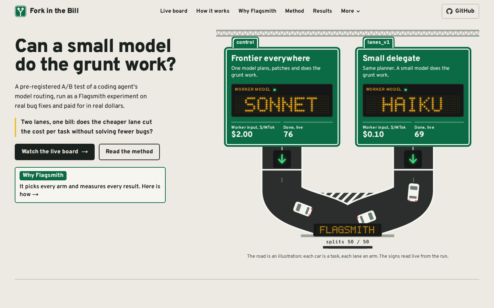
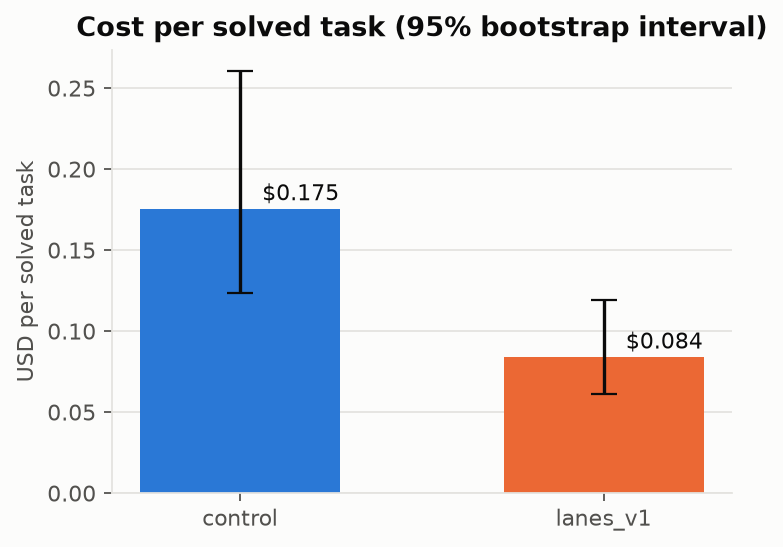
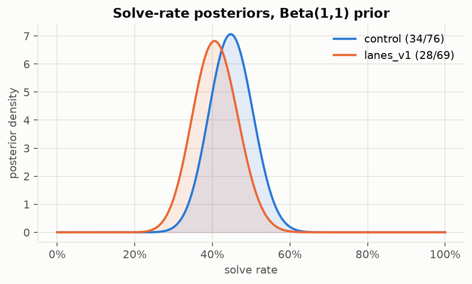
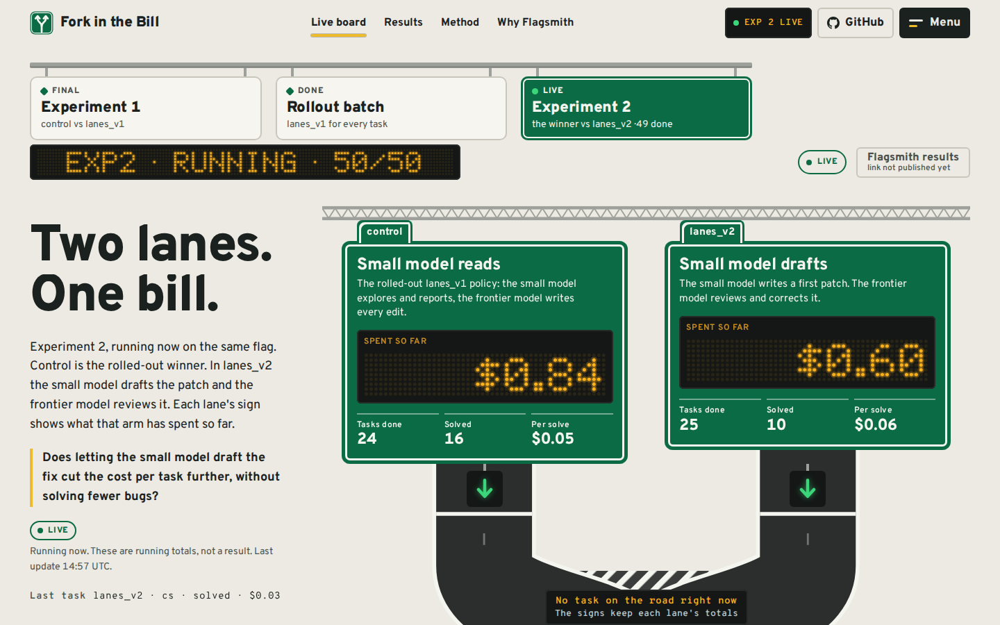

Toggle Wars · Track 01
Can a small model do a coding agent's grunt work, and cut the cost per solved task?
A pre-registered Flagsmith experiment on real bug fixes, paid for in real dollars.
Fork in the Bill team (CoffeeAndToggle)

The bill
Searching the repo, reading long files, running the tests and reading the log: the worker lane. When it runs on the frontier model, that is where most of the money goes.
Prices: harness/pricing.json, checked 2026-11-27. Share: experiment 1, control arm.
The question
Decision rule, fixed and hashed before the first task. Ship lanes_v1 only if all three hold:
Flagsmith reports a chance to beat control of at least 95% on task_cost.
Our Beta(1,1) posterior gives P(Δsolve > −m) ≥ 0.90, with m = 20 percentage points.
Flagsmith does not report task_solved as losing.
No early stopping. The run ends when every task is done, excluded or invalid. Source: prereg/experiment-1.md.
The design
Planner: Sonnet 5.5
Worker: Sonnet 5.5
Planner: Sonnet 5.5
Worker: Haiku 5.5
sha256 44d715bd6bd7f8580e8bb1950a21ea852dfea4daaf040c84009f391bf56e19c2
Tag prereg-exp1, committed 22:57:35 UTC.
Experiment 822 started 23:02:34 UTC.
Amendment 1 added 80 pre-cutoff tasks to clear Flagsmith's 50-per-variant floor, before any per-arm result was seen.
Same prompts, tools, token limits and caps (40 turns, $0.60, 1200 s). The planner has no shell, so all grunt work goes through the worker. Tasks: real SWE-bench-Live issues in 8 languages.
How Flagsmith is used
agent_routing, multivariate. Its value is the whole routing policy as JSON, schema-checked on every read.
Keyed variant lanes_v1, plus a routing_kill switch that sends no exposure. Never used in the run.
One task, one identity: swelive:<id>, with repo, language and month traits.
task_cost primary, task_solved guardrail, turns and seconds informational.
Id 822, 50/50 at 100% rollout, flag locked, prereg hypothesis pasted verbatim.
End Experiment with lanes_v1 as the decision: it becomes the same flag's value at 100%.
# harness/policy.py, once per task flag = client.get_experiment_flag("agent_routing", identifier=identity, traits=traits) client.flush_events() # exposure sent before anything else is tracked
The result · cost
−52.2% per solved task. Mean cost per task $0.0784 → $0.0340 (−56.7%).

76 control and 69 lanes_v1 tasks. Intervals: percentile bootstrap.
The result · guardrail
| Solved | Rate | Interval | |
|---|---|---|---|
control | 34 / 76 | 44.7% | 34.1% to 55.9% |
lanes_v1 | 28 / 69 | 40.6% | 29.8% to 52.4% |
This rules out large losses only. A drop of a few points would go undetected at this size.

Flagsmith's verdict, then ours
lanes_v1.| Mean cost change | Flagsmith (normal) | Ours (bootstrap) |
|---|---|---|
| Point | −56.6% | −56.7% |
| Interval | −68.8% to −44.3% | −67.1% to −42.9% |
lanes_v1 mean cost | $0.0341 | $0.0340 |
| Sample ratio | p = 0.561, flagged: False | |
Chance to beat control on cost: 100.0%. Met: True
Posterior within the margin: 97.7%. Met: True
Flagsmith's task_solved: inconclusive, not losing. Met: True
Flagsmith uses a delta-method normal approximation; we use a bootstrap and Beta posteriors on purpose, so agreement is not an artefact of one method. Results pulled 20261127T120242Z.
Integrity
# hash chain and Merkle root uv run python -m integrity.verify_ledger runs/exp1 # every arm recomputed offline uv run python -m integrity.verify_assignment \ --run runs/exp1 # registration matches its hash sha256sum -c prereg/HASHES.txt # every figure matches numbers.json uv run python -m analysis.check_consistency # all of it, every run make verify
What's next
Experiment 822 ended with lanes_v1 as the rollout decision. No code changed.
A fresh batch from tasks/pools/rollout.txt then ran on that flag: 13 tasks, $0.0369 per task, 53.8% solved.
lanes_v2 against the experiment 1 winner. One change: prompt_variant, from delegate_v1 to draft_review_v1.
It will be registered, hashed and tagged before its first task. Not run yet.
Use the kit
# flag, variant, kill switch, metrics and experiment from your policy files
uv run forkbill init --control flagsmith/policies/control.json \
--variant lanes_v1=flagsmith/policies/lanes_v1.json \
--metrics flagsmith/metrics.json --hypothesis-file prereg/experiment-1.md --start
lanes = RoutedLanes(flagsmith=flagsmith, identity=f"swelive:{instance_id}", pricing=pricing) reply = client.messages.create(model=lanes.main_model, ...) lanes.record_call("main", Usage.from_anthropic(reply.usage)) sub = client.messages.create(model=lanes.delegate_model, ...) lanes.record_call("delegate", Usage.from_anthropic(sub.usage)) lanes.finish(solved=solved, turns=turns) # task_cost, task_solved, task_turns, task_seconds
Python and TypeScript, an OpenFeature adapter, and remote, local, Edge Proxy and edge-local modes. Checked on self-hosted Flagsmith with experimentation on.
Links
github.com/Prashant-thakur77/fork-in-the-bill
forkbill.prashantthakur.dev
Paper: docs/paper.pdf. Every figure in it and in this deck comes from analysis/out/numbers.json.
